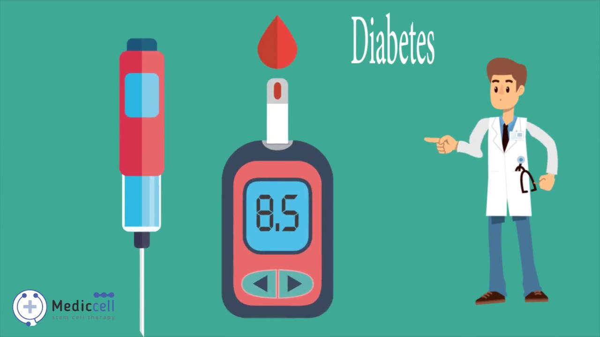

Diabetes mellitus, commonly known as diabetes, is a metabolic disease that causes high blood sugar. The hormone insulin moves sugar from the blood into your cells to be stored or used for energy. With diabetes, your body either doesn’t make enough insulin or can’t effectively use the insulin it does make. Untreated high blood sugar from diabetes can damage your nerves, eyes, kidneys, and other organs.
Diabetes symptoms vary depending on how much your blood sugar is elevated. Some people, especially those with prediabetes or type 2 diabetes, may sometimes not experience symptoms. In type 1 diabetes, symptoms tend to come on quickly and be more severe. Some of the signs and symptoms of type 1 diabetes and type 2 diabetes are:
Each type of diabetes has unique symptoms, causes, and treatments Learn more about how these types differ from one to another.
| Fasting | After eating | 2-3 hrs after eating | |
|---|---|---|---|
| Normal | 80-100 | 170-200 | 120-140 |
| Pri Diabetic | 101-125 | 190-230 | 140-160 |
| Diabetic | 126+ | 220-300 | 200+ |
Click the image for more infomation about Diabetic.
